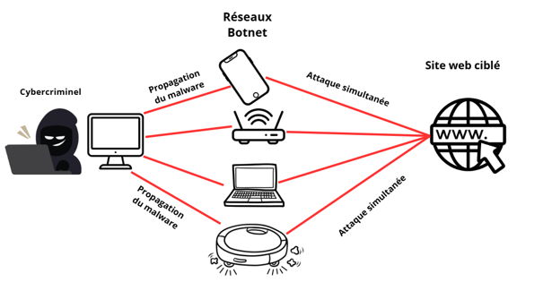

Une attaque DDoS est une cyberattaque qui a pour but d’empêcher l’accès à un site web au utilisateurs habituels en surchargeant un site web ou des serveurs afin que ces outils ,qui sont indispensables à l’utilisation courante d’un site web, soit hors service le temps de l’attaque.
Pour certaines entreprises qui dépendent essentiellement de la vente en ligne, cela peut devenir très compliqué car si une solution n’est pas rapidement trouvée il y aura de grosse pertes financière. Les hackers vont jouer sur cela en demandant une rançon pour rendre le site à nouveau accessible.
Le but d’une attaque DDoS est de submerger un site web ou un serveur afin de faire en sorte que les installations ne puissent plus suivre la demandes et empêcher l’accès aux utilisateur.
Pour faire cela les cybercriminels vont avoir besoin de plusieurs ordinateurs afin d’envoyer un maximum de demandes, mais les assaillants ne possède pas un si grand nombre de d’appareils donc ils vont simplement utiliser les appareils d’autre personnes.
C’est la première partie, ce qu’on appelle créer un botnet. Les attaquants vont utiliser des logiciels malveillants (malwares) afin d’infecter un maximum d’appareils connectés à Internet (cela peut inclure de nombreux types d'appareils comme les smartphones, les ordinateurs et même les routeurs, etc...). Le nombre augmente exponentiellement, car plus il y a d’appareils connectés, plus ils ont de chances d’en infecter de nouveaux.
Une fois assez d’appareils infectés, l'attaquant prend le contrôle à distance de ce réseau et ordonne à toutes les machines de lancer leurs requêtes en même temps vers le serveur ciblé pour le faire planter.
Voici un schéma simplifié pour une meilleurr représentation visuelle :

Schéma simplifié d'une attaque DDoS
L’objectif de ces attaques est d'occuper la totalité de la bande passante (la connexion Internet) du site web pour l’empêcher de répondre aux requêtes des clients. Pour cela, la connexion réseau du site va être submergée de données par les botnets de l’attaquant, rendant le site totalement inaccessible pour les utilisateurs habituels.
Dans cette attaque, ce n’est pas la bande passante du site que l’on veut submerger, mais on vise directement les machines, comme les serveurs ou les pare-feu, pour ainsi complètement épuiser leur capacité à répondre aux vraies demandes.
Le principe est toujours de surcharger la page web, mais ici, les bots n'envoient pas de requêtes étranges et ne sont pas bloqués par le pare-feu. Ils accèdent au site comme des utilisateurs normaux. À ce moment-là, deux scénarios sont possibles : soit le site possède des pages lourdes à charger, et un petit nombre de bots suffit en demandant au serveur de les générer en boucle ; soit les pages sont simples, et le hacker envoie alors un nombre immense de requêtes basiques (comme rafraîchir la page d'accueil) jusqu'à ce que la puissance de calcul de la machine soit totalement dépassée.
Si vous êtes victime d’une attaque DDoS, voici les différentes manière de se protéger et les reflexe à avoir :
Il suffit simplement d’utiliser un routeur ou un pare-feu (WAF) afin de les identifiés et de les bloquer immédiatement afin de les empêcher d’accéder et de perturber le site web. Si même avec cette solution votre bande passante est surcharger alors il faut contacter votre fournisseur internet.
Le CDN est un réseau de serveurs physiques placés partout dans le monde, qui agit comme une copie du site en stockant son contenu statique. En cas d'attaque DDoS, le trafic malveillant est automatiquement dilué et absorbé entre tous ces serveurs, ce qui empêche le serveur principal d'être submergé.
Certains attaquants menacent de continuer l'attaque si vous ne payez pas. L'OFCS déconseille fortement de céder, car cela n'offre aucune garantie d'arrêt. Il faut plutôt faire comprendre à l'assaillant que cela ne vous affecte pas et donner à vos clients d'autres moyens de vous contacter, jusqu'à ce que les assaillants abandonnent.